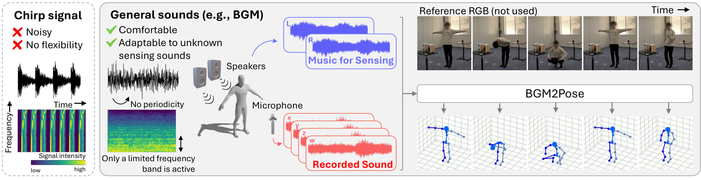
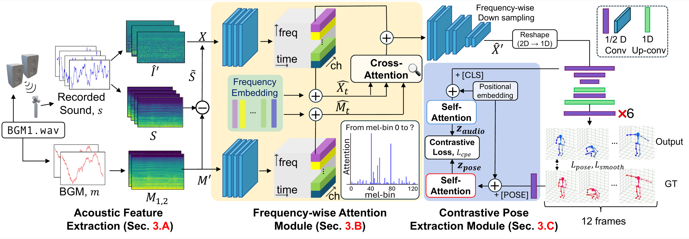
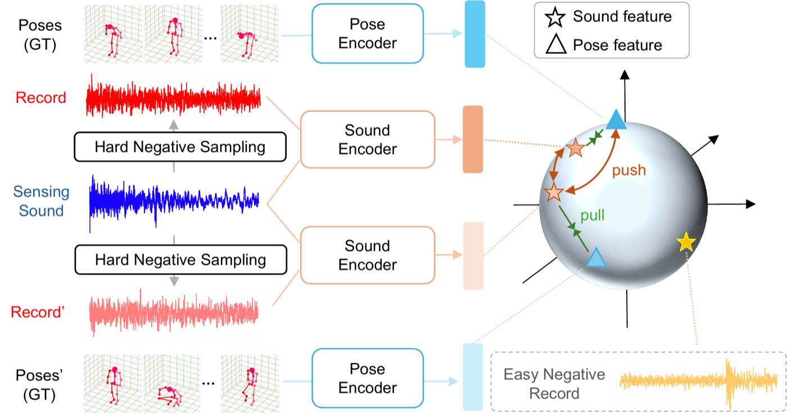

{kind=link}
{kind=link}
{kind=link}
Single-music
The same ambient track is played during training and testing.
1Keio University 2Tokyo University of Science 3NTT, Inc. 4JST PRESTO
IEEE Open Journal of Signal ProcessingWe propose BGM2Pose, a non-invasive 3D human pose estimation method using pre-selected everyday music (e.g., background music) as active sensing signals. Unlike existing approaches that significantly limit practicality by employing intrusive chirp signals within the audible range, our method utilizes user-selected natural music that causes minimal discomfort to listeners. Estimating human poses from standard music presents significant challenges. In contrast to sound sources specifically designed for measurement, regular music varies in both volume and pitch. These dynamic changes in signals caused by music are inevitably mixed with alterations in the sound field resulting from human motion, making it hard to extract reliable cues for pose estimation.
To address these challenges, BGM2Pose introduces a Contrastive Pose Extraction Module that employs contrastive learning and hard negative sampling to eliminate musical components from the recorded data, isolating the pose information. Additionally, we propose a Frequency-wise Attention Module that enables the model to focus on subtle acoustic variations attributable to human movement by dynamically computing attention across frequency bands. Experiments suggest that our method outperforms the existing methods, demonstrating substantial potential for real-world applications.


The system controls playback, so the clean music signal is always available — at inference as well as training. We compute log-mel spectrograms of the four-channel recording (w, x, y, z) and of each speaker's track, and subtract the latter from the former after normalization. In the log domain this is a pseudo transfer function of the room. Stacked with the three-channel intensity vector, the input has 11 channels, 128 mel bins and 12 frames.
A chirp excites every frequency in turn; music does not. Only a few bands carry energy at a given moment, and those are the only bands where a body can leave a trace. The FA module keeps full frequency resolution in its early layers and lets each mel bin of the recording (query) attend over the bins of the playback track (key), with a shared learnable frequency embedding. The learned weights are sparse and move with the music, as the inset in the figure shows. No temporal attention is used; a time-wise 1D U-Net then decodes 21 joints for all 12 frames.
During training, the audio embedding ([CLS]) and the ground-truth pose embedding ([POSE])
are aligned with a symmetric contrastive loss. With BGM-based hard negative sampling, each mini-batch
is filled with clips recorded under the same track. Those clips sound almost alike, so the only way to match
audio to the right pose is through what the body did — music-specific content gets pushed out of the representation.
Total loss: Lpose + 100 Lsmooth + Lcpe, with temperature τ = 0.07.

Every clip shows a subject who was not in the training set. Baselines are Jiang et al. (WiFi-based pose estimation), Ginosar et al. (speech-to-gesture) and Shibata et al. (chirp-based acoustic pose estimation, CVPR 2023), all retrained on our recordings.
The same ambient track is played during training and testing.
The test track never appears in training. The subject wears a mocap suit, so ground truth is available.
Trained only on mocap-suit recordings, tested on a subject in everyday clothes with an unseen track.
Evaluated on AMPL: 4+ hours of synchronized audio and motion capture, 27 sessions, 9 subjects and four tracks (three ambient, one jazz), recorded in a classroom with background noise and reverberation. All settings are cross-subject. Errors are in units of the hip–spine distance (9.21 cm on average), averaged over three seeds; whiskers show one standard deviation.
Removing the FA module costs the most, especially when the test music is unseen (cross-music RMSE 1.036 → 1.210). Without the CPE module, PCKh@0.5 drops from 0.573 to 0.531 in the single-music setting.
@article{shibata2026bgm2pose,
title = {{BGM2Pose}: Active {3D} Human Pose Estimation With Non-Stationary Sounds},
author = {Shibata, Yuto and Oumi, Yusuke and Irie, Go and Kimura, Akisato and Aoki, Yoshimitsu and Isogawa, Mariko},
journal = {IEEE Open Journal of Signal Processing},
volume = {7},
pages = {790--799},
year = {2026},
doi = {10.1109/OJSP.2026.3705347}
}